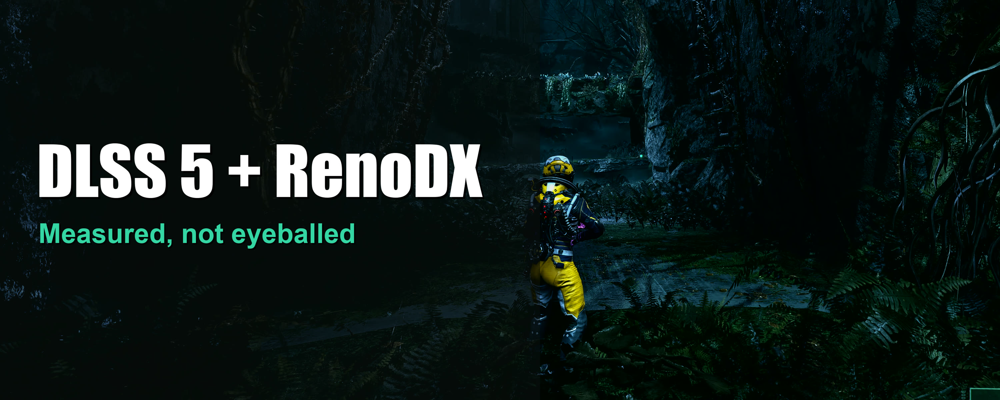

Measurement write-up
DLSS 5 Neural Rendering in Returnal
DLSS 5 Neural Rendering can produce a dramatic before-and-after image. I wanted to know how much of that difference survives measurement, which controls genuinely matter, and what the effect costs in motion.

What changed
In the final live SDR sweep, switching Neural Rendering on increased the character crop's measured edge detail by about 50%. The environment crop gained about 29%. Perceptual intensity rose 7.0% and chroma rose 3.8%.
That is a real and easily visible change. Natural was the strongest style in this scene. Intensity stopped producing a measurable gain once it reached 1.0. Local Structure at 2.0 scored higher but made foliage visibly speckled, which is a useful reminder that a sharpness metric also rewards noise.
The smaller controls were less decisive. Some landed inside normal scene drift, and one sweep that initially appeared to find a winner fell apart when the candidates were tested in rotation.
The test system
- GPU
- GeForce RTX 5090, 32 GB. This is the only GPU verified by this test.
- Display
- ASUS ROG Swift OLED PG32UCDM3, 3840x2160 at 240 Hz, tandem QD-OLED. ASUS specifies a 1,000 cd/m2 HDR peak, with the note that peak brightness can vary with color pre-calibration.
- Game
- Returnal on Steam at 3840x2160, Epic preset, ray-traced shadows and reflections on Epic.
- Upscaling
- DLSS Super Resolution Quality, Frame Generation on, Reflex On + Boost.
- Post-processing
- Depth of field off, film grain at 0%, motion blur and chromatic aberration disabled at engine level.
- Observed load
- 95 to 97% GPU load, 56 to 66 C, 2497 to 2625 MHz, and 14.5 to 21.7 GB of VRAM.
NVIDIA's public DLSS 5 material does not provide a complete generation-by-generation compatibility table. Community experiments have since shown a patched Ada path on RTX 40 cards, and an RTX 3080 clip also exists, so I do not claim that Neural Rendering is impossible below RTX 50. Those are unofficial experiments, not supported compatibility, and the public lower-generation examples I found do not include the same feature-creation log and advancing neural-frame counter verified here.
The neural runtime was NVIDIA DLSSNR 310.8.0.0. The installed DLL has a valid NVIDIA signature. A ReShade add-on inserted the neural pass after the game's DLSS output and before the HUD. The run log recorded feature 18 being created at 3840x2160 and its evaluation succeeding.
How I measured it
The HDR capture had to stay in floating point
Windows composes HDR desktop content in a linear, floating-point scRGB space. Microsoft documents that scRGB values can extend beyond the normal 0 to 1 range, with 1.0 representing 80 nits and 12.5 representing 1,000 nits on an HDR display.
My first 8-bit desktop capture did not preserve that signal. It changed the result enough to make the neural pass appear destructive. I discarded that run and captured the desktop as FP16 instead.
The comparison uses perceptual intensity
The FP16 scRGB captures were converted to BT.2020 and then to ICtCp using the BT.2100 matrices and PQ transfer function. The article's detail value is the mean absolute Laplacian of the ICtCp intensity component. Chroma comes from the Ct and Cp components.
This does not turn one metric into an objective definition of beauty. It makes the measurements less vulnerable to a single bright highlight dominating a linear-light score. Synthetic checks also confirmed that a neutral grey produces effectively zero chroma, saturated red does not, increasing luminance moves the intensity value, and scRGB 1.25 reads as 100 nits within numerical precision.
Every reading uses two crops and a measured noise floor
One crop follows the character. A second crop covers nearby rock and foliage. If both move together, the change may be global tone mapping rather than character-specific detail.
Vanilla was measured at the beginning and end of each sweep. The difference between those brackets became the noise floor. A setting had to clear that floor before I treated it as a result.
Photo Mode gave the cleanest wrong answer
An early matrix used Photo Mode because the frozen frame was quiet. At Intensity 1.0 it produced output that was effectively identical to vanilla. Live gameplay showed a large change at the same setting.
NVIDIA says DLSS 5 consumes color and motion vectors. The frozen test therefore removed an input the model expects. I discarded the entire Photo Mode matrix and repeated the work in live gameplay.
Neural Rendering on versus off
The final live SDR comparison used the average of the two vanilla brackets as its baseline.
- Vanilla
- Detail 0.03840, intensity 0.1655, chroma 0.0440.
- Neural Rendering on
- Character detail about +50%, environment detail +29%, intensity +7.0%, chroma +3.8%.
The effect was strongest on the suit. Tube coils gained ridges, the harness gained definition, and fabric stopped reading as a flat surface. The environment also changed, so the result was not confined to the character crop.

What the controls actually did
NR Style
Natural was the clear winner in this Returnal scene.
- Natural
- Detail +51.9%, intensity +6.9%, chroma +3.7%.
- Default
- Detail +37.3%, intensity -11.3%, chroma -11.8%.
- Cinematic
- Detail +15.3%, intensity -3.7%, chroma -4.2%.
Default and Cinematic both delivered less measured detail while darkening and desaturating this scene. That is a result for this setup, not a promise that Natural will win in every game or every shot.

NR Intensity
The measured character-detail curve was:
0.0: off. 0.25: +7%. 0.5: +15%. 0.75: +39%. 1.0: +49%. 1.25: +51%. 1.5: +48%. 2.0: +48%.

Values above 1.0 did not produce a gain larger than the run's noise. For this setup, 1.0 is the sensible stopping point.
Local Structure
At 0.0, the measured edge-detail gain disappeared even though Neural Rendering remained enabled. The score rose through 1.0 and continued climbing at 2.0, but the picture did not keep improving.

The 2.0 result is why I did not rank settings by edge energy alone. Noise is high-frequency information, so a detail metric can reward a worse picture.
The less decisive controls
- NR Preset
- The early preset comparison belonged to the discarded frozen-frame run. I did not establish a defensible live ranking between Default and presets 1 to 3, so the final configuration keeps Default as the baseline rather than claiming the options are identical.
- Skin Structure
- The selected test crop showed the back of Selene's suit and no visible skin. The sweep produced no stable monotonic trend. This test cannot tell us whether the control works on a suitable face.
- Automatic Mask
- Its apparent gain remained inside the measured noise floor.
- Color Strength
- Raising it reduced chroma monotonically in this sweep. At 1.0, chroma finished 1.9% below vanilla.
The sweep that changed the conclusion
A one-control-at-a-time sweep initially made Local Tone 2.0 look like a winner at +71.7% detail. The scene contains an intermittent particle effect and an idling character, so a changing frame can masquerade as a slider improvement.
I retested the four leading configurations three times each in rotation:
- 1.0 / 1.0 / 1.0
- Intensity, Tone, Structure. Detail 0.05986, intensity 0.1753, own spread 0.00138.
- 1.0 / 1.5 / 1.0
- Intensity, Tone, Structure. Detail 0.06039, intensity 0.1801, own spread 0.00040.
- 1.0 / 1.5 / 1.5
- Intensity, Tone, Structure. Detail 0.05901, intensity 0.1770, own spread 0.00528.
- 1.0 / 2.0 / 1.5
- Intensity, Tone, Structure. Detail 0.06165, intensity 0.1782, own spread 0.00135.
The largest difference between configuration means was about 0.00264. The largest within-configuration spread was 0.00528. The apparent detail winner was therefore smaller than the observed scene variation.
Tone 1.5 with Structure 1.0 was slightly brighter than the base configuration and had the smallest spread. I kept that modest change, but I do not present the four detail scores as meaningfully different.
SDR versus the game's native HDR
Using the same live-sweep method, the baseline Neural Rendering configuration increased character edge detail by about 52.6% in the SDR run and about 39.7% in the native-HDR run.
Both changes were large. This experiment did not establish why the SDR run measured higher, so I am not attributing the gap to training data or claiming it will transfer to another integration. The final setup uses Returnal in SDR because that was the better measured path on this machine, with HDR conversion applied afterwards.
Returnal's HDR setting does not stay off by itself
The game's HDR switch sits under Graphics, then Post Processing. With the Windows desktop in HDR, Returnal restored its own HDR setting at startup during these tests. It also rewrote the Frame Generation and display-mode entries in its user settings.
The configuration that survived three restarts used these engine settings:
[SystemSettings] r.HDR.EnableHDROutput=0 r.HDR.UI.CompositeMode=0 r.HDR.Display.OutputDevice=0 r.HDR.Display.ColorGamut=0 r.AllowHDR=0
After that block was applied, the game's user-settings file recorded HDR as off across the three verification launches. The tested Engine.ini was then marked read-only.
I used Returnal's Fullscreen mode 0 for all measurements. I did not run a controlled fullscreen-versus-borderless latency test, so this article makes no claim that one display mode is universally faster. Modern DirectX presentation paths do not support that blanket rule.
Final settings for this setup
- Neural Rendering
- On. This produced the main visual gain.
- Add-on Upscaling
- Off. Returnal's own DLSS Super Resolution handled upscaling.
- NR Preset
- Default. Kept as the baseline because the valid live test did not rank the presets.
- NR Style
- Natural. It preserved more light and color while producing the largest detail gain in this scene.
- NR Intensity
- 1.00. Higher values did not beat the noise floor.
- Local Tone
- 1.50. It was modestly brighter than the base configuration and had the smallest repeat spread.
- Local Structure
- 1.00. A value of 1.5 was not measurably better, while 2.0 visibly speckled foliage.
- Skin Structure
- -1.00. No useful trend was established in this no-skin crop, so this is not a general recommendation for face scenes.
- Automatic Mask
- Off. The measured difference stayed inside the noise floor.
- Color Strength
- 0.00. Higher values reduced measured chroma in this sweep.
The add-on settings survived a suspend-and-relaunch check without needing to be applied again.


Performance cost
The performance test used six overlay samples per state in an on, off, on sequence. No other workload was using the GPU.
- On, first bracket
- 120.5 fps average, 67.2 fps 1% low, 36.8 ms latency.
- Off
- 225.2 fps average, 152.5 fps 1% low, 20.2 ms latency.
- On, repeat bracket
- 119.2 fps average, 77.0 fps 1% low, 36.6 ms latency.
Against the off state, average frame rate fell by about 46.5%. The 1% low fell by roughly 49.5% to 56.0% across the two enabled brackets. Reported latency rose by about 81% to 82%, or roughly 16.5 ms.
The two enabled average-frame-rate readings differed by only 1.3 fps, while the gap to the disabled state was about 105 fps. The cost was far larger than the observed drift.
This implementation adds Neural Rendering as a generic post-pass rather than a native Returnal integration. Its roughly two-times frame-time increase belongs to this exact setup and must not be presented as a universal DLSS 5 cost.
What I learned
The strongest result is not a slider value. It is the number of plausible conclusions that failed a second test.
An 8-bit capture reversed the HDR result. Photo Mode removed an input the model expects. A sharpness metric rewarded visible noise. A one-at-a-time sweep promoted scene drift into a 71.7% "winner." Even the published performance table had to be recalculated from all eighteen captured overlay samples.
The final picture is simpler. Neural Rendering made a large visible difference in Returnal on this machine. Natural at Intensity 1.0 was the important choice. Local Tone 1.5 was a small refinement. Local Structure 2.0 was a measurable but visible mistake. And the cost of this community implementation was nearly half the average frame rate.